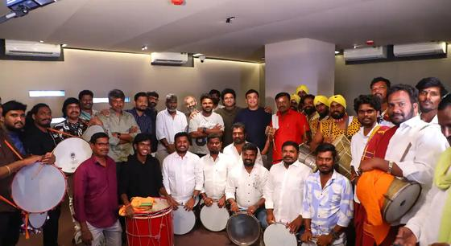
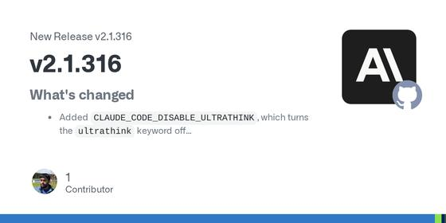
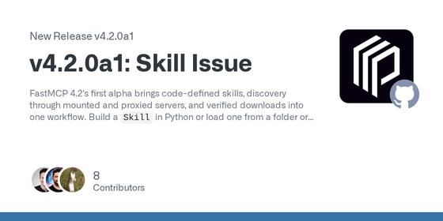
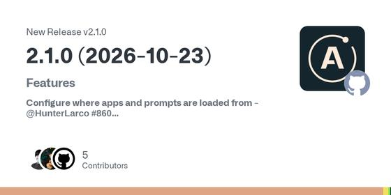
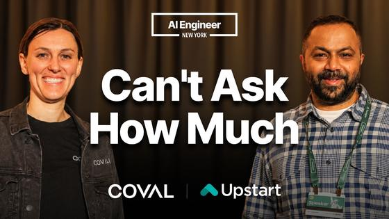
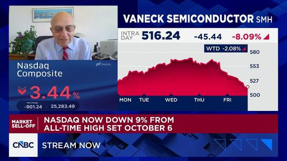
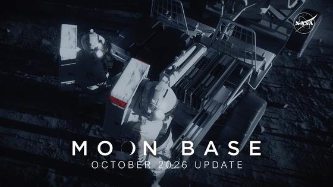
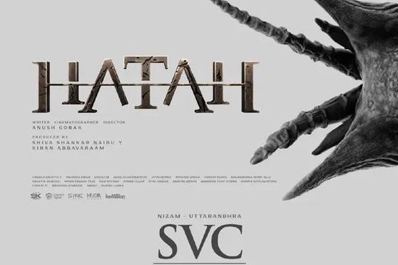
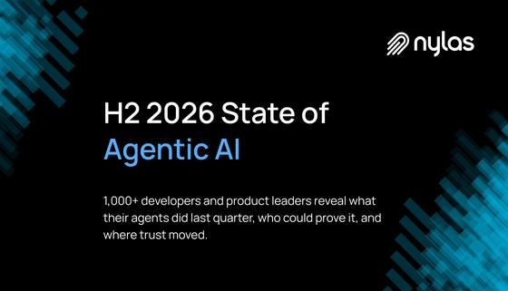

📍 San Jose: 63° / 49°F, Rain
⏱ ~76 min reading
141 items
|
The Morning Brief
Executive Personal Intelligence Briefing
|
Sunday, November 1, 2026
Sunrise 06:32 · Sunset 17:09 · AQI 45 · Moon: Last quarter, 58% lit
|
|
Executive Synthesis: New agent identity guidance and evaluation papers lead this Sunday issue, alongside weekend badminton titles, a Cambrian-evolution deep dive, and the week’s Telugu releases.
Don't Miss
NIST proposes ten design tenets for agent identity systems
—
NIST's October 27 blog proposes an initial set of ten design tenets for agent identity, authentication, and authorization, drawing on public comments and stakeholder discussions. It calls for distinct, cryptographically verifiable agent identities, a traceable link to the initiating entity, narrower authority as tasks are delegated, and zero standing privilege. It also describes just-in-time, time-bounded access and runtime checks that can respond to changing risk. NIST presents these as initial proposals to guide systems across enterprise and consumer settings, not as a finalized standard or tested implementation.
Takeaway: For your agent-security work, the separation between agent identity, delegated scope, and runtime authorization offers public guidance to compare with MCP permission designs.
 RSIHub gives agent-evolution methods a shared test bench
RSIHub gives agent-evolution methods a shared test bench
—
Listed by ByteDance on Hugging Face, RSIHub is an open-source framework for comparing agent-evolution methods that otherwise rebuild execution and evaluation machinery; its recipes keep evaluation outside the mutable optimization surface. Across AHE, Hyperagents, A-Evolve and GEPA on MiniSWE, Codex on Terminal Bench 2 and τ³ Banking, the largest observed pass@1 gain was 13.5 percentage points. Rankings varied by setting, and gains did not always transfer to held-out tasks, so the paper supports shared protocols rather than a universally best optimizer. Hugging Face showed 49 upvotes.
Takeaway: For your agent-evaluation and prompt-optimization interests, watch how the framework isolates evaluation from the part being optimized.
US and Canada discuss a limited Black Sea ceasefire for grain and energy shipments
—
After the G20 foreign ministers’ meeting, US Secretary of State Marco Rubio said Washington was reviewing Turkish and Indian proposals for a limited Black Sea ceasefire to protect grain shipments and possibly energy traffic. Canada’s Anita Anand said Ottawa had discussed the idea with Ukraine and India, including a pause in attacks on infrastructure before winter. Anand said Russia had not shown willingness to proceed. The proposal would address shipping and infrastructure risks, but would not settle the broader war; discussions are preliminary.
Takeaway: It is a new diplomacy and energy-security development in the Russia-Ukraine conflict you follow.
 Most S&P 500 stocks rose in October despite the index's decline
Most S&P 500 stocks rose in October despite the index's decline
—
In its Oct. 30 month-end review, MarketWatch found a split beneath the headline index: the S&P 500 fell 0.9% for October while 72% of its large-cap constituents rose. Intel shares fell 45.3% and Alphabet shares fell 18.7% for the month, leaving losses among the largest technology names to outweigh gains elsewhere. The breadth figure offers a different lens on October's weakness than a cap-weighted index alone; it is a monthly snapshot, not a measure of Friday's single-session return.
Takeaway: It separates broad-market performance from the large technology names you follow in your market coverage.
Sindhu and Lakshya win both Hylo Open singles finals
—
Earlier coverage, “Hylo Open: PV Sindhu Sweeps Anmol Kharb to Reach Women's Singles Final in Saarbrücken” and “Hylo Open: Lakshya Sen Dispatches Toma Junior Popov in Straight Games to Make Saarbrücken Final,” reported their semifinal wins. On Nov. 1, both converted those runs into titles: Sindhu beat Line Højmark Kjærsfeldt 21-12, 21-14, while Sen beat Jonatan Christie 21-17, 21-10. PTI's report says it is Sindhu's second title of the season, closing the tournament updates for both Indian finalists.
Takeaway: Your badminton coverage now has the tournament outcomes for both Indian finalists.

DSP records Yellamma title song with 100 folk rhythm artists
—
123Telugu reports that Devi Sri Prasad recorded Yellamma’s title song with 100 traditional folk rhythm artists from different parts of India. The story describes an effort to bring regional percussion traditions into the Telugu film’s title track; it does not say the song has been released or give a release date. The report says Yellamma is scheduled to arrive in theatres on March 5, 2027. It offers no audio preview or track-level description, so the item is about the recording process.
Takeaway: Devi Sri Prasad is one of the composers you follow; this is a new Telugu music-production story, not a song release.
Three recent stories moved this weekend: Sindhu and Lakshya Sen turned their Hylo semifinal runs into titles, ISRO’s NVS-03 completed its first orbit manoeuvre, and Aadarsha Kutumbam’s day-two estimate rose; figures remain attributed to their sources.
Sindhu and Lakshya win both Hylo Open singles finals
—
Earlier coverage, “Hylo Open: PV Sindhu Sweeps Anmol Kharb to Reach Women's Singles Final in Saarbrücken” and “Hylo Open: Lakshya Sen Dispatches Toma Junior Popov in Straight Games to Make Saarbrücken Final,” reported their semifinal wins. On Nov. 1, both converted those runs into titles: Sindhu beat Line Højmark Kjærsfeldt 21-12, 21-14, while Sen beat Jonatan Christie 21-17, 21-10. PTI's report says it is Sindhu's second title of the season, closing the tournament updates for both Indian finalists.
Takeaway: Your badminton coverage now has the tournament outcomes for both Indian finalists.
 ISRO completes NVS-03's first orbit manoeuvre
ISRO completes NVS-03's first orbit manoeuvre
—
Earlier coverage, “ISRO's GSLV-F18 successfully launches NVS-03 navigation satellite into orbit,” reported the launch and initial injection. ISRO's Oct. 31 update says NVS-03 completed its first orbit manoeuvre at 16:48 IST after a 2,174.8-second LAM engine burn. The estimated orbit is now 5,477.6 × 37,833.4 km, and the satellite's health is normal. Further manoeuvres are planned before placement in geostationary orbit at 111.75°E, so orbital insertion is still underway.
Takeaway: Your space coverage gains the first post-launch manoeuvre and status check for NavIC's NVS-03.
Aadarsha Kutumbam posts a higher second-day estimate
—
Earlier coverage, “Aadarsha Kutumbam Opens with Rs 16 Crore Worldwide Gross on Day 1,” reported the opening-day gross. The Indian Express, citing industry tracker Sacnilk, says Saturday's estimated collection was Rs 10.40 crore across 3,192 shows, up 6.7% from Friday's Rs 9.75 crore. The reported two-day total is Rs 23.60 crore in India and Rs 34.95 crore worldwide. These are Sacnilk estimates as reported by the newspaper, giving a new early-weekend snapshot rather than a final accounting.
Takeaway: Your Telugu cinema tracking gets a second-day update on a Venkatesh–Trivikram release.
Public releases touch local agent sandboxes, subagent effort settings, and voice and enterprise tools. Security coverage looks at NIST’s proposed identity tenets and MCP authorization; benchmark and customer results stay attributed to their publishers.
Copilot brings local agent sandboxes and next-edit suggestions to JetBrains
—
GitHub’s October 28 JetBrains update makes local sandboxing generally available for Copilot agent workflows. Commands now run with restricted filesystem, network, credential, and other system access according to developer or organization policies. The same release makes next edit suggestions generally available in JetBrains, with changes to context awareness and inline review. Both are specific to the JetBrains plugin; GitHub says the update is rolling out to users, so availability may be gradual.
Takeaway: You follow Copilot and production-agent controls; this gives a concrete IDE example of local sandbox boundaries and inline editing.

Claude Code adds a default effort setting for subagents
—
Anthropic’s v2.1.316 release, dated October 31, adds `CLAUDE_CODE_SUBAGENT_EFFORT`. When no subagent instruction names an effort level, the environment variable sets the agent’s default instead of inheriting the session’s level. The same release adds a toggle that disables the `ultrathink` keyword. These are configurable defaults rather than measured quality changes, so the release does not establish effects on accuracy, latency, or resource use.
Takeaway: It adds a directly configurable lever for balancing effort in multi-agent coding workflows and comparing harness controls.
Cartesia launches a managed platform for enterprise voice agents
—
Cartesia launched Managed Agents, an enterprise voice platform that bundles its speech models with a hosted runtime, telephony, knowledge bases, and tool integrations. In benchmark results shown in Cartesia's launch post, the system ranks first of 30 on Artificial Analysis's Speech Agent Arena with preference Elo 1115; Cartesia also reports 87.4% accuracy and 90.7% experience on ServiceNow's EVA-Bench across 200+ scenarios. Those are benchmark measurements presented by the vendor, so independent replication and the underlying task mix matter. Launch pricing is $0.03 per minute during the introductory offer.
Takeaway: For your interest in real-time voice agents, this makes the combined speech model and runtime a concrete product to compare; the benchmark claims remain vendor-presented.
Docebo makes its learning agents and knowledge layer generally available
—
Docebo launched Knowledge and Agents for all Learn customers on October 28. Knowledge searches approved training material and connected sources such as SharePoint, Confluence, Google Drive, and Slack while preserving each source's permissions. Four prebuilt agents cover course authoring, tutoring, follow-up practice, and course discovery, alongside a no-code custom-agent builder. Docebo says more than 50 customers piloted the agents; one restaurant operator reported 10 hours a month saved per store manager and 25% of frontline training questions answered without an administrator. These are company-reported pilot outcomes, not independent measurements.
Takeaway: This is a fresh example of enterprise agents combining scoped company knowledge, multi-step actions, and admin controls, close to your interest in enterprise agent platforms.
Mistral lists October 31 as the retirement date for its hosted GLM 5.2 endpoint
—
Mistral's September 29 changelog entry says its hosted `zai-glm-5-2` model was deprecated and scheduled to retire on October 31, with Z.ai GLM 5.3 as the replacement at the same price. The model directory lists that retirement date, which has now passed. Mistral's page does not say whether calls to the old endpoint are already rejected, so builders should verify the model ID and test the migration rather than assume a particular failure mode.
Takeaway: For your agent work, this is a useful reminder to track hosted model IDs and test migrations before an endpoint retirement affects a workflow.
 NVIDIA releases an open speech model for long, multilingual transcription
NVIDIA releases an open speech model for long, multilingual transcription
—
NVIDIA published Nemotron 3.5 Transcribe on October 28 as a speech-augmented language model with about 4.3 billion active parameters. Its single checkpoint handles several transcript styles, speaker attribution, translation, and language identification across 40 languages, including recordings up to one hour. NVIDIA reports mean word error rates of 4.71% on the English and 4.62% on the multilingual Open ASR Leaderboards; those are the publisher's benchmark results. The technical report says this is a specialized transcription model, not a general-purpose assistant.
Takeaway: It gives your voice-agent research a new open-weight transcription option, with multilingual and speaker-attributed outputs to evaluate separately from speech generation.
NIST proposes ten design tenets for agent identity systems
—
NIST's October 27 blog proposes an initial set of ten design tenets for agent identity, authentication, and authorization, drawing on public comments and stakeholder discussions. It calls for distinct, cryptographically verifiable agent identities, a traceable link to the initiating entity, narrower authority as tasks are delegated, and zero standing privilege. It also describes just-in-time, time-bounded access and runtime checks that can respond to changing risk. NIST presents these as initial proposals to guide systems across enterprise and consumer settings, not as a finalized standard or tested implementation.
Takeaway: For your agent-security work, the separation between agent identity, delegated scope, and runtime authorization offers public guidance to compare with MCP permission designs.
CSA frames MCP tool exposure as a privilege decision
—
Cloud Security Alliance identity engineer Badal Bhushan argues that MCP permission design needs two distinct checks: whether a capability should be exposed to an agent at all, and whether a specific call is authorized for its identity, context, action, and target resource. Filtering the tool list can reduce unnecessary exposure, he says, but it is not an authorization boundary because invocation still needs independent enforcement. The article recommends narrow capabilities and a trusted control outside the model. It is a practitioner's architecture proposal, not a published MCP standard or a measured security evaluation.
Takeaway: The two-gate model is a useful design lens for the MCP and agent-permission systems you follow.

FastMCP alpha adds discoverable skills over MCP
—
FastMCP 4.2.0a1 is the first alpha in the 4.2 line and adds an MCP Skills workflow: developers can define `Skill` values in code or load them from folders and packages, publish them with `SkillCatalogProvider`, and let clients discover metadata or download and export files. Proxy forwarding of skills is opt-in. The release is explicitly experimental and intended for integration testing; it also changes the model names around skills (`Skill` now represents file contents, while `MCPSkill` is the wire metadata model). Exports with overwrite enabled replace the installed folder and its local additions, so migration behavior deserves a read before trying it.
Takeaway: This is a concrete MCP path for your agent-skills interest, with discovery and file export still marked experimental.

Apollo MCP Server adds optional task handles for long GraphQL calls
—
Apollo MCP Server 2.1.0 lets operators configure where MCP Apps and prompt files are read from, with matching environment variables; existing deployments keep the `apps` and `prompts` defaults. It also adds an opt-in MCP Tasks mode for slow GraphQL calls: after a configurable threshold, the tool can return a task handle for polling or cancellation, while fast calls still return normally. The page says task state is held in server memory, so restart behavior matters. The release also changes an environment telemetry default that could otherwise label production as development.
Takeaway: It is a useful runtime pattern for tool calls that may outlast a request timeout, using MCP Tasks rather than blocking the call.

Voice AI Where One Wrong Question Breaks the Rules - Shiv Indap, Upstart & Brooke Hopkins, Coval
—
Upstart's loan-verification calls are the case study for evaluating production voice agents. Shiv Indap and Brooke Hopkins discuss compliance constraints, replacing spreadsheet-based review with human-review queues, and a feedback loop that re-simulates fixes before production. The description reports LLM-judge agreement with human reviewers rising from 33% to 92%, and stresses that changes still receive human sign-off.
Takeaway: It connects your voice-AI interest with agent evaluation, monitoring, and human-reviewed release gates.
OpenTelemetry for AI Agents: Tracing a Refund That Never Happened
—
VIDEU tests agent observability with a refund failure: a support agent claims a €49.90 refund, but the payment ledger shows nothing settled. The walkthrough traces the request across services, finds a masked payments-database pool failure, and compares transcript scoring with an outcome check. It separates tracing's role in locating a failure from the ledger's role in confirming whether money moved.
Takeaway: The end-to-end trace and outcome-check framing fits your agent observability and evaluation interests.
Across trending, systems, and evaluation work, the papers test judge reliability, long-horizon tasks, prompt optimization, and the scaffolding around coding agents. Popularity counts and reported results are tied to what the pages show.
RSIHub gives agent-evolution methods a shared test bench
—
Listed by ByteDance on Hugging Face, RSIHub is an open-source framework for comparing agent-evolution methods that otherwise rebuild execution and evaluation machinery; its recipes keep evaluation outside the mutable optimization surface. Across AHE, Hyperagents, A-Evolve and GEPA on MiniSWE, Codex on Terminal Bench 2 and τ³ Banking, the largest observed pass@1 gain was 13.5 percentage points. Rankings varied by setting, and gains did not always transfer to held-out tasks, so the paper supports shared protocols rather than a universally best optimizer. Hugging Face showed 49 upvotes.
Takeaway: For your agent-evaluation and prompt-optimization interests, watch how the framework isolates evaluation from the part being optimized.
UserArena tests long-horizon shopping agents against user trajectories
—
Alibaba-listed UserArena targets a gap in interactive recommendation evaluation: simulators need to reflect how people respond over a sequence of shopping decisions. It packages 64,729 session trajectories from 11,010 users into an interactive environment and proposes On-Policy Trajectory Distillation, which achieved the strongest simulator fidelity among methods tested and most closely reproduced the production policy effect in offline simulation. The result is bounded to this e-commerce environment and its offline validation protocol, so transfer to other agent domains remains an open question. Hugging Face marked it “#1 Paper of the day” and showed 63 upvotes.
Takeaway: It offers a concrete trajectory-level evaluation pattern for your work on testing multi-step agents against realistic user behavior.
A matched harness study finds strong coding agents may need less scaffolding
—
The EPFL/Apple authors test whether specialized scaffolding adds value to autonomous machine-learning engineering when the model and time budget are matched. On MLE-bench's fixed 30-task comparison, their single-session Malena agent was not outperformed by four open-source MLE harnesses at any tested frontier backbone; with GLM-5.2 it earned medals on 62.5% of competitions versus 47.1% for the strongest external harness. The paper argues elaborate harness layers may be redundant for strong coding agents, but most evidence uses public Kaggle-derived tasks and the authors flag contamination risk and limited statistical power.
Takeaway: For your harness and evaluation interests, it is a reason to isolate model, tool-access, and orchestration effects under matched budgets.
VoxTurn combines voice-agent turn decisions in one model pass
—
The paper targets early cutoffs and extra detector calls in cascaded voice agents. VoxTurn uses a 0.8B speech model to answer several turn-taking questions in one forward pass, then re-queries every 0.25 seconds while silence continues. At a 300 ms mean-latency budget, it reports 11.5% false cutoffs in English and a 19.9% mean across 14 languages; replaying 150 English turns yielded 17% cutoffs in Pipecat and 9% in LiveKit. The language mean hides uneven results, including 37.5% on Hindi, and framework numbers are replay tests rather than live deployment.
Takeaway: For your voice-agent interests, compare turn-detection errors by language and framework instead of relying on English latency alone.
 Evaluating AI agents: moving past the vibe check
Evaluating AI agents: moving past the vibe check
—
Google outlines an agent-evaluation pipeline that starts from critical user journeys, manually reviews 5–20 traces, converts failures into deterministic assertions and boolean judge checks, and reruns the same frozen suite after prompt, model, or tool changes. Its agent-eval example ingests OpenTelemetry/OpenInference traces, reports quality alongside latency, tokens, API spend, and tool calls, and gates pull requests on an example 95% pass bar with zero regressions. The authors warn that 1–5 judge scales drift and recommend checking automated verdicts against human-reviewed traces. This is implementation guidance, not an independent comparison.
Takeaway: Your trajectory-testing work can use this staged pattern to validate judge rubrics against reviewed runs before letting them gate releases.
 Optimize Cheap, Deploy Strong: A Recipe for Cost-Efficient GEPA
Optimize Cheap, Deploy Strong: A Recipe for Cost-Efficient GEPA
—
GEPA's candidate-scoring runs dominate optimization cost, so this recipe uses a cheap task model for repeated rollouts, a stronger reflector for edits, then deploys the unchanged prompt on a stronger model. On HotpotQA, the authors report 59.4% accuracy versus 50.4% for same-tier optimization at about $7 versus $102; IFBench improved by 7.5 points at roughly sevenfold lower cost. Across 48 setups, the pooled gain was 2.8% (95% CI 1.3–4.4) and positive in 36. The family-level sample is only three seeds, so rankings are trends, not firm comparisons.
Takeaway: For your GEPA work, this offers a measured way to reduce optimization spend while checking whether prompts transfer to the deployment model.
Most S&P 500 stocks rose in October despite the index's decline
—
In its Oct. 30 month-end review, MarketWatch found a split beneath the headline index: the S&P 500 fell 0.9% for October while 72% of its large-cap constituents rose. Intel shares fell 45.3% and Alphabet shares fell 18.7% for the month, leaving losses among the largest technology names to outweigh gains elsewhere. The breadth figure offers a different lens on October's weakness than a cap-weighted index alone; it is a monthly snapshot, not a measure of Friday's single-session return.
Takeaway: It separates broad-market performance from the large technology names you follow in your market coverage.
 Reddit reports 53% revenue growth as daily users reach 130.3 million
Reddit reports 53% revenue growth as daily users reach 130.3 million
—
In its Oct. 29 release for the quarter ended Sept. 30, Reddit reported $895 million in revenue, up 53% year over year, with advertising revenue at $847 million, up 54%. The company's daily active unique count rose 12% to 130.3 million, and diluted EPS was $1.40, up 75%. Reddit estimated fourth-quarter revenue of $1.00–$1.03 billion. The results show growth in both reported engagement and monetization; the user measure is Reddit's own DAUq metric, and its forward-looking adjusted EBITDA guidance is not reconciled to GAAP.
Takeaway: This adds a current public-company data point on digital advertising and platform engagement to your market tracking.
FedEx Freight posts its first four-month results as a standalone company
—
FedEx Freight's Oct. 29 report covered a one-time four-month transition period through Sept. 30, its first as an independent company. Revenue rose 9.2% to $3.3 billion, while average daily shipments fell 1.4%; adjusted operating income increased 16.4% to $510 million, but adjusted diluted EPS declined 24.6% to $2.15. The company attributed revenue growth to fuel surcharges, heavier shipments, and higher base revenue per hundredweight, partly offset by softer volume. Its reporting period and spin-off costs complicate direct quarter-to-quarter comparisons.
Takeaway: The first standalone results give your market coverage an operating comparison beyond the mega-cap technology earnings cycle.
 October GST rises 22.9%, with an import-led jump
October GST rises 22.9%, with an import-led jump
—
For October 2026, India's gross GST collection was ₹2,31,290 crore, up 22.9% from ₹1,88,125 crore a year earlier. Import-linked GST rose 42.2% to ₹72,246 crore, while domestic GST increased 15.8% to ₹1,59,044 crore. The timing matters: these October receipts reflect commercial activity in September. The headline calls it the second-highest tally, but the article says that is on a like-for-like basis after adjusting for the old compensation cess; the unadjusted total is third-highest.
Takeaway: It adds a current macro data point to the India economy coverage you follow.
IGL profit drops 93.5% as gas costs outweigh higher sales
—
Indraprastha Gas reported standalone net profit of ₹24.38 crore for Q2 FY27, down 93.5% from ₹372.51 crore a year earlier, despite higher sales volumes. Average daily gas sales reached 10.06 million standard cubic metres per day, versus 9.31 a year earlier, while gross sales turnover rose to ₹5,999.13 crore from ₹4,431.63 crore. The report attributes the profit decline to higher input gas costs, which outweighed volume and turnover growth. The figures cover July–September 2026.
Takeaway: It adds a useful energy-cost signal to the India economy coverage you follow.
Muthoot Finance profit grows 36% as gross NPAs rise
—
For the quarter ended Sept. 30, Muthoot Finance reported consolidated net profit of ₹3,278 crore, up 36% from ₹2,412 crore a year earlier, while consolidated assets under management grew 42% to ₹2.09 lakh crore. The Economic Times also reported that the standalone gross non-performing asset ratio reached 3.87% at September-end, versus 2.28% three months earlier. That asset-quality movement adds context to the profit and AUM growth; this is a report of the results, not an assessment of the company.
Takeaway: It adds a current financial-sector result with asset-quality context to your India-market coverage.
 BLS schedules September JOLTS data for Tuesday, November 3
BLS schedules September JOLTS data for Tuesday, November 3
—
The BLS 2026 calendar schedules the September Job Openings and Labor Turnover Survey (JOLTS) for Tuesday, November 3, at 10:00 a.m. Eastern Time. The monthly release reports job openings, hires, quits, and separations, offering a labor-demand snapshot distinct from the payroll report. The numbers are not available yet; this entry is only a reminder of the release time. The calendar labels its times Eastern Time and lists this release under the November schedule.
Takeaway: You follow labor and market-calendar releases, and this is the week's first major U.S. labor-demand checkpoint.
PTC India board is scheduled to consider half-year results on November 2
—
NSE's corporate event calendar lists a PTC India Limited board meeting for Monday, November 2, to consider and approve unaudited financial results for the quarter and half-year ended September 30, 2026. The exchange listing carries a broadcast timestamp of October 15; it does not state a meeting start time. The scheduled date is in India Standard Time. This is an upcoming results-calendar item, not a report of the results or an expectation about their direction.
Takeaway: You follow Indian market calendars, and this adds a dated company-results event for the coming week.
Weekly Market Metrics | Week 44 (26–30 Oct 2026) | Is the Worst Behind Us?
—
For week 44 (Oct. 26–30), Sandeep Rao recaps the NIFTY's 2% rise to 23,053 and its move back above 23,000, alongside pharma leadership and a cooling India VIX. The overview also notes that major indices remained below 52-week highs and key moving averages, then reviews sector measures, commodities, and the coming week's events. It is a broad market wrap rather than a single-company story.
Takeaway: It gives your India-markets interest a concise recap of index levels, sectors, volatility, and upcoming events.

Wharton’s Jeremy Siegel: There are a lot of non-tech stocks that aren't doing badly
—
CNBC's Closing Bell segment has Wharton professor Jeremy Siegel discuss the week in markets, with a qualitative focus on performance beyond technology stocks. The page provides no specific figures or forecast, so this works as a short perspective on market breadth rather than a numerical recap or a trading call.
Takeaway: It adds a concise sector-breadth perspective to your US-market watch without turning the interview into a trading signal.
US Stock Futures Rally Ahead Of Fed Decision, Asia Trades Mixed; Muted Start On D-Street Today?
—
CNBC-TV18's Oct. 26 market update previews the cross-market setup ahead of the U.S. Fed decision, with U.S. stock futures rallying and Asian markets mixed. It frames a potentially muted start on Dalal Street; this is a pre-market snapshot rather than the later week-end result.
Takeaway: It ties your global-markets interest to the week's US-futures, Asia, and central-bank setup.
Latest Radar
Reddit Investor Relations:
U.S. Bureau of Labor Statistics:
National Stock Exchange of India:
Nature Communications via PubMed Central:
European Space Agency, ESA:
Press Information Bureau:
Prime Minister's Office of India:
Telugu Film Directors Association:
Nach Nachke / Eventbrite:
StarTalk Special Edition:
Simon & Schuster (Manning title):
Children's Musical Theater San Jose:
San José State University Events Calendar:
Lucy enters Jupiter’s Trojan asteroid region
—
After five years in flight, NASA says Lucy has entered the broad region occupied by Jupiter’s Trojan asteroids, after traveling more than 2.2 billion miles. It is a navigation milestone, not an asteroid encounter: the craft is approaching the L4 group, and its first close pass, of Eurybates, is scheduled for Aug. 11, 2027. Lucy is expected to visit targets in both Trojan swarms. Their compositions and orbits may help test ideas about how the giant planets formed and shifted into their present arrangement.
Takeaway: Your interest in NASA missions and solar-system formation makes this an early marker for Lucy’s Trojan campaign.
NEO Surveyor completes sunshade solar-array integration
—
NASA reports that teams completed integration and functional testing of 864 solar cells on NEO Surveyor’s 20-foot (6-meter) sunshade. The shade blocks solar glare so the 50-centimeter infrared telescope can scan sky close to the Sun, where ground-based optical surveys have trouble finding some asteroids and comets. Comparing objects in two infrared bands lets the team estimate their temperatures and sizes. This is a spacecraft-construction milestone, not a detection result; the mission is being prepared to improve the census of potentially hazardous near-Earth objects.
Takeaway: Your interest in asteroid missions and planetary defense makes the sunshade’s role in NEO Surveyor useful context.
 Darter fishes show two independent sex chromosome turnovers
Darter fishes show two independent sex chromosome turnovers
—
Whole-genome resequencing and experimental backcrosses in two North American darter hybrid zones show that sex determination maps to different, nonhomologous chromosomes in each pair, indicating two independent turnovers. Sex chromosomes also had reduced introgression and transmission distortion. Cytoplasmic-background allele shifts were concentrated on sex chromosomes and enriched near nuclear-encoded mitochondrial genes, suggesting cytonuclear selection may contribute to reproductive barriers. The evidence links chromosome turnover with hybrid isolation, but it comes from two hybrid zones and the proposed selection mechanism remains a possibility rather than a demonstrated cause.
Takeaway: Your evolution and genetics interests connect directly to this test of how sex chromosomes and mitochondrial interactions can shape speciation.
 Small viral genomes reveal links between viruses and cell compartments
Small viral genomes reveal links between viruses and cell compartments
—
Mining environmental metagenomes with sequence models, researchers identified small viral genomes encoding HK97-fold protein shells that resemble encapsulins, cellular compartments, but lack the portal and tail genes common in larger related viruses. Phylogenetic and structural analyses show mixed virus–encapsulin groupings and similarities between encapsulins and immature viral procapsids. The authors propose that the procapsid state could enable bidirectional evolution between viruses and biochemical compartments, and that these shells may have begun as lower-symmetry compartments. This is an evolutionary model inferred from present-day genomic and structural comparisons, not direct evidence of ancient transitions.
Takeaway: Your origin-of-life and bioenergetics interests make this a relevant hypothesis about how protein compartments and viruses may have co-evolved.
What happened this month at the European Space Agency? (October 2026)
—
ESA's October roundup spans mission preparation and science: the Rosalind Franklin rover team trained in Spain; Smile captured a full ring of northern lights; Mars Express revealed new clues about a large Martian cloud; Hera returned first images of the asteroids it will study; and astronaut Sophie Adenot came back after 237 days. It is a compact cross-mission briefing rather than a single-result analysis.
Takeaway: This quick update across ESA missions connects to your astronomy and planetary-science interests, including Mars, asteroids and solar-system exploration.

NASA Moon Base: Rovers and Lunar Terrain Vehicles (October 2026 Update)
—
NASA's October update describes how robotic rovers and crewed lunar terrain vehicles may support early Moon Base development. It covers travel across rugged terrain, reaching the lunar south pole, and conducting research and tests, presenting these vehicles as exploration infrastructure for Artemis rather than reporting a completed scientific mission.
Takeaway: It adds a concrete mission-design angle to your interest in NASA programs and future lunar exploration.
US and Canada discuss a limited Black Sea ceasefire for grain and energy shipments
—
After the G20 foreign ministers’ meeting, US Secretary of State Marco Rubio said Washington was reviewing Turkish and Indian proposals for a limited Black Sea ceasefire to protect grain shipments and possibly energy traffic. Canada’s Anita Anand said Ottawa had discussed the idea with Ukraine and India, including a pause in attacks on infrastructure before winter. Anand said Russia had not shown willingness to proceed. The proposal would address shipping and infrastructure risks, but would not settle the broader war; discussions are preliminary.
Takeaway: It is a new diplomacy and energy-security development in the Russia-Ukraine conflict you follow.
UN calls for an investigation into the death of an OHCHR staff member in Houthi custody
—
The UN Secretary-General’s spokesperson said OHCHR staff member Mohammad el Shami died while detained by Houthi de facto authorities in Yemen; the circumstances remain unclear. The statement says the UN received neither information about his well-being nor proof of life after his detention began on June 6, 2024. It calls for an impartial investigation and says 70 UN personnel and five former staff members remain detained, alongside humanitarian and civil-society personnel. The UN statement does not establish a cause of death.
Takeaway: This is a new humanitarian-rights development within the Middle East conflicts you follow.
 Bengaluru–Mumbai sleeper train is flagged off via Andhra Pradesh
Bengaluru–Mumbai sleeper train is flagged off via Andhra Pradesh
—
Railway Minister Ashwini Vaishnaw flagged off the Bengaluru–Mumbai Vande Bharat Sleeper Express on November 1, according to the Ministry of Railways. The announced route passes through Anantapur and Guntakal in Andhra Pradesh, with further stops in Karnataka and Maharashtra. The Bengaluru-originating train is scheduled to depart at 19:45 and reach Mumbai at 11:55 the next day; the return service leaves Mumbai at 20:10 and arrives in Bengaluru at 12:00. It is planned to run six days a week, except Monday from Bengaluru and Tuesday from Mumbai. The release does not state the first regular-service date.
Takeaway: The route adds two Andhra Pradesh stops to a new South India rail link, matching your India and Andhra interests.
Cabinet approves a five-year village-governance scheme
—
On October 28, the Union Cabinet approved the Centrally Sponsored Pradhan Mantri Viksit Gram Swaraj Yojana for 2026–27 through 2030–31. The programme is designed to support annual development plans and online audit plans for more than 2.55 lakh panchayats, and capacity-building for about 32 lakh elected representatives and functionaries. Its stated outlay is ₹7,395.55 crore, split between a ₹4,869.48 crore central share and ₹2,526.07 crore from states. The scheme applies across states and Union Territories; these are approved targets, not measured outcomes.
Takeaway: This nationwide governance change is relevant to your interest in Indian public policy and Andhra Pradesh.
New clues on US-Iran diplomacy | BBC News
—
BBC News reports that US Vice President JD Vance's outreach to Iran points toward a framework for negotiations, while the White House is reportedly considering additional military options after the midterm elections. It notes new Strait of Hormuz incidents affecting shipping safety and oil prices. The key distinction is between a negotiating framework and a peace deal.
Takeaway: It connects directly to your interests in Middle East diplomacy, energy and the Strait of Hormuz.
Germany's dual Asia strategy: Courting China, building alternatives | DW News
—
DW examines two parallel German trips across Asia: President Frank-Walter Steinmeier in Beijing and Chancellor Friedrich Merz in Japan, South Korea and Singapore. It explains Berlin's effort to reinforce ties with China while cultivating cooperation among other middle powers and reducing risk without decoupling. The analysis gives context beyond the daily diplomatic headlines.
Takeaway: It maps to your geopolitics interests in China, trade and how other powers manage ties with Beijing.
Shnaider wins Tokyo final for sixth career title
—
Diana Shnaider beat Leylah Fernandez 6-4, 5-7, 6-2 in 2 hours and 18 minutes to win the Toray Pan Pacific Open final in Tokyo. She had led 6-4, 4-0 before Fernandez recovered the second set; in the decider, Shnaider saved three break points at 1-1, broke in the fifth game and won the last three games. This was Shnaider’s first title of 2026 and sixth career singles crown, as well as her third WTA 500 title. Fernandez finished runner-up.
Takeaway: Tennis is one of your tracked sports interests; this gives you a fresh WTA 500 result and the match's key turning point.
Paris Masters main draw opens Monday
—
The tournament’s official provisional schedule begins the main draw Monday, Nov. 2, from 11:00, with 15 singles first-round and five doubles matches. The schedule sets singles quarterfinals for Nov. 6, semifinals for Nov. 7 and the singles final for Nov. 8 at 15:00, following the doubles final at 12:30. Qualifying is listed for Oct. 31 and Nov. 1, so the event is already underway. The schedule is labeled provisional, so check the tournament’s daily order of play for match-specific assignments.
Takeaway: You follow tennis; the day-by-day outline puts the final ATP Masters 1000 event of the season on this week's calendar.
New Zealand finish the T20I tour with a seven-wicket win
—
New Zealand beat India by seven wickets in the fifth T20I at Seddon Park in Hamilton on November 1. India made 191/8 in 20 overs, and New Zealand reached 195/3 in 18. It was the final match of the five-game tour after New Zealand had also won the fourth T20I in Auckland two days earlier. The result closes the series; the match-center page supplies the score and event date but no broader match analysis.
Takeaway: For your India-cricket tracking, this closes the New Zealand tour with the final T20I result.
Mexico City Grand Prix starts Sunday at 2 p.m. local time
—
Formula 1's official guide schedules the Mexico City Grand Prix for 14:00 local time on Sunday, November 1, at the Autódromo Hermanos Rodríguez. It is the 19th Grand Prix weekend of the 2026 season, with the race scheduled for 71 laps. The page also lists practice and qualifying times and links to F1 viewing options. The schedule is useful for the race-day timing; the championship-permutation preview has already appeared in recent coverage.
Takeaway: This gives your F1 weekend tracking the exact start time for the Mexico City race.
A doubles footwork guide separates attacking and defensive formations
—
Coach Justin Ma’s 15-minute guide separates front-and-back attacking formation from side-by-side defense. It outlines the front player’s and rear player’s bases, the lateral steps used while defending, and the cue to rotate side-by-side as soon as a pair lifts. Ma also gives a three-part shadow drill for practicing the transition without a shuttle. This is a coach-authored technique guide, not a measured comparison of training methods; it offers concrete patterns to try with a partner but does not establish that one drill improves match results.
Takeaway: Your badminton interest makes the attack-to-defense rotation cues a practical topic to try with a partner.
Four short games teach badminton doubles decisions
—
Badminton House's coach-written practice guide sequences four short games around doubles defense, attack, serve and return, and transitions. It uses one court, four players, role changes, and observable cues such as whether defenders recover side by side after a lift. The article distinguishes its own timing and scoring adaptations from formation principles it attributes to BWF coaching material. It offers a structured session to try, but does not present a measured comparison showing that the drills improve match results.
Takeaway: This gives your badminton interest a practical doubles-rotation and first-three-shot session to try with a partner.
Valentin Vacherot vs Jiri Lehecka Highlights | Basel 2026 Final
—
ATP Tour’s three-minute cut recaps the Basel final between Valentin Vacherot and Jiri Lehecka. It gives a compact view of the points that decided the title match rather than an extended replay, making it an efficient way to revisit the tournament’s closing contest after the latest ATP results.
Takeaway: It adds a just-finished ATP final to your tennis highlights queue.
Jan-Lennard Struff vs Nuno Borges Highlights | Basel 2026 Quarter Finals
—
ATP Tour condenses the Basel quarter-final between Jan-Lennard Struff and Nuno Borges into a little over three minutes of match highlights. It is a quick look at a separate path through the same tournament, with the format favoring key exchanges over tactical commentary or a full match replay.
Takeaway: It gives you another concise ATP match recap from the Basel week.
Fossils, molecular clocks, and oxygen records reveal a drawn-out transition rather than a single evolutionary instant.
Read the full deep dive analysis →
Ram Charan and Sukumar launch their RC17 collaboration
—
Cinema Express reports that Ram Charan and Sukumar launched their second collaboration with a pooja ceremony on Nov. 1. Chiranjeevi performed the ceremonial first clap, and the film remains tentatively titled RC17. The article says the project is backed by Sukumar Writings, Mythri Movie Makers, and T-Series. The launch confirms production has begun, but no final title or theatrical date is given.
Takeaway: Your Telugu-cinema interest includes major actor-director collaborations and current production news.
ENE Repeat schedules its trailer for Nov. 3
—
The Telugu Film Directors Association lists a Nov. 3 trailer release for ENE Repeat, the sequel to Ee Nagaraniki Emaindi. The page says the filmmakers are skipping a separate teaser and going straight to the trailer; it names Tharun Bhascker as director and Vishwak Sen, Abhinav Gomatam, Venkatesh Kakumanu, and Srinath Maganti among the cast. It also states the movie's worldwide theatrical date is Nov. 19, 2026; no trailer launch time is specified.
Takeaway: It gives your Telugu-cinema release tracker a date two days ahead.
DSP records Yellamma title song with 100 folk rhythm artists
—
123Telugu reports that Devi Sri Prasad recorded Yellamma’s title song with 100 traditional folk rhythm artists from different parts of India. The story describes an effort to bring regional percussion traditions into the Telugu film’s title track; it does not say the song has been released or give a release date. The report says Yellamma is scheduled to arrive in theatres on March 5, 2027. It offers no audio preview or track-level description, so the item is about the recording process.
Takeaway: Devi Sri Prasad is one of the composers you follow; this is a new Telugu music-production story, not a song release.
Dorothy soundtrack arrives as a five-track Telugu EP
—
Apple Music lists a five-track, 21-minute Telugu soundtrack EP for Dorothy, credited to Ilaiyaraaja and Kasarla Shyam and released October 23 under Sony Music Entertainment India. The listing confirms the language, track count, runtime, and label, but provides no track-by-track description or chart figures; this is an album-release note rather than a reception claim. It adds a full Telugu soundtrack alongside this week’s single and recording updates.
Takeaway: This adds a new Telugu soundtrack album to your Telugu-first music mix.
I'm Game starts streaming on JioHotstar in Telugu on Nov. 6
—
Dulquer Salmaan's I'm Game begins streaming on JioHotstar on Nov. 6, available in Telugu alongside Malayalam, Hindi, Tamil and Kannada. That adds a Telugu-language OTT premiere to Friday's calendar.
Takeaway: It is a near-term addition to your Telugu cinema calendar, with the platform and language versions confirmed.

Hatah targets a Nov. 6 Telugu theatrical release
—
Kiran Abbavaram's Telugu production Hatah is set for a theatrical release on Nov. 6, 2026. 123telugu reports that SVC Release will distribute it in Nizam and Uttarandhra, giving the film a confirmed regional cinema rollout.
Takeaway: This gives your Telugu cinema calendar a confirmed release date and distribution regions for the coming week.
SIFA schedules Vignesh Ishwar for a Carnatic concert in Santa Clara
—
South India Fine Arts lists Carnatic vocalist Vid. Vignesh Ishwar with violinist Vid. Sayee Rakshit, mridangist Vid. Praveen Sparsh, and ghatam artist Vid. Chandrasekhara Sharma for Sunday, Nov. 15, 4–7 p.m. PST at Elizabeth Hangs Theater, Santa Clara Convention Center, 5001 Great America Parkway, Santa Clara. SIFA's event page links to reserved, premium, and regular tickets. This is a South Bay performance exactly two weeks after this issue.
Takeaway: This is a confirmed South Bay Carnatic performance for your Indian music calendar.
Nach Nachke lists a Bollywood Diwali party at Era Lounge
—
Nach Nachke's Eventbrite listing schedules the Biggest Bollywood Diwali Party for Saturday, Nov. 7, 10 p.m. to 2 a.m. at Era Lounge, 386 South First Street, San Jose. The organizer advertises Bollywood, Punjabi, and other desi party tracks, with traditional Indian attire required for entry. It is a ticketed nightlife event rather than a live-singer concert; the listing provides the date, address, and ticket details.
Takeaway: It adds a confirmed Bay Area Indian-music night to your local event list.
Will Trent's first four seasons join Netflix on Nov. 3
—
ComingSoon reports that Netflix will add all four existing seasons of ABC crime procedural Will Trent on Tuesday, Nov. 3; Netflix's own November guide lists the same date. The show follows Georgia Bureau of Investigation Special Agent Will Trent, played by Ramón Rodríguez, and is based on Karin Slaughter's novels. This is a library addition ahead of its fifth season, not a new-season premiere or review. The date gives procedural fans a clear point when the show's existing run becomes available to stream.
Takeaway: Its crime-procedural focus and imminent full-series arrival fit your interest in crime drama.
Apple sets heist series 12 12 12 for Nov. 13
—
Apple TV's eight-episode heist series begins streaming globally on Friday, Nov. 13, with two episodes at launch and weekly episodes through Dec. 25. Anthony Mackie plays a disgraced FBI agent opposite Jamie Dornan's career criminal in a European cat-and-mouse story centered on a Zurich bank vault. The episodes track three timelines: 12 months of planning, 12 hours for the heist and 12 days after it. Apple has released a trailer, but this schedule announcement offers no critical assessment of the finished series.
Takeaway: Its heist plot and release date make it a timely fit for your crime-drama watchlist.
Annayya Paanam lo Video Song | BHOGI | Sharwanand, Anupama | Sampath Nandi | Bheems Ceciroleo
—
Aditya Music’s full Telugu song video features singer Sri Krishna and composer Bheems Ceciroleo, with lyrics by Chandrabose. The description identifies it as a release from Bhogi and says the film is scheduled for worldwide theaters on November 12. At 4:49, this is a complete song release rather than a short promo.
Takeaway: It adds a new Bheems Ceciroleo track to your Telugu film-music watchlist.
Maa Ooru Rayavalasa Lyrical | Rayavalasa | Karthik Jayanthi | Radhika Jayanthi | Arjun Balaa
—
RAYSUN PRODUCTIONS released this 3:53 Telugu lyrical video for Rayavalasa, with the title crediting Karthik Jayanthi, Radhika Jayanthi and composer Arjun Balaa. The lyric-video format keeps the song itself central and makes this a different film-music pick from the larger-label releases elsewhere in the section.
Takeaway: It gives your Telugu soundtrack coverage a fresh release from a smaller production banner.

The State of Agentic AI: H2 2026
—
Nylas’s H2 2026 report argues that agent adoption has moved from pilot trust questions to operational incident handling: 54% of surveyed U.S. professionals reported an agent error in the prior 90 days, but only 53% could produce a complete audit log. It connects identity practices to traceability: 26% reported dedicated agent identities, and teams with them reported full auditability more often. The report is a company-published, self-reported survey of 1,030 U.S. professionals, so treat it as vendor evidence rather than an independent benchmark; it offers a useful checklist for incident logging, identity and approval design.
Takeaway: A useful checklist for your production-agent engineering interest, especially audit logs, agent identity and approval boundaries.
Species Have Blurry Boundaries
—
Kevin Blake’s essay argues that bacterial species labels are increasingly hard to align with genomic evidence: horizontal gene transfer lets microbes exchange genes across lineages, while naming rules and regulatory categories still assume cleaner boundaries. It traces the shift from morphology-based classification to sequencing and explains why the tree of life can look network-like for microbes. For readers interested in biology and origins of life, the payoff is a clear account of how scientific categories change when new measurement tools expose variation, and why those categories matter for research and environmental regulation.
Takeaway: It connects your biology interest to how genome sequencing and gene transfer challenge familiar species boundaries.
How a Contractor's AI Agent Got Into the Pentagon; Anthropic’s Doomer IPO; ICE at the Polls?
—
WIRED reports that a defense contractor linked a Claude Code commercial account to a secure Department of Defense system, exposing sensitive information. Hosts then discuss Anthropic’s IPO filing and preparations around ICE at polling places; those are separate stories in the same episode. The agent-access segment is a concrete case for examining account boundaries and oversight when coding assistants touch sensitive environments. The episode page does not identify the contractor.
Takeaway: A timely case study for your interest in production agent boundaries, access controls and oversight.
The Game Theory of AI with Aza Raskin
—
Neil deGrasse Tyson, Chuck Nice and Gary O’Reilly talk with Aza Raskin about whether AI systems and their users can remain in control, using game theory to frame alignment and cooperation. The episode also covers AI-driven cyberattacks, incentives and the limits of pausing frontier work; in its closing stretch, Raskin describes using AI to study animal communication. It bridges technology, science and ethics, while presenting a broad conversation rather than a technical treatment of alignment.
Takeaway: A science-oriented companion to your AI interests, linking agent coordination and alignment to game theory and animal communication.
 Prompt Engineering in Practice by Richard Davies and Rafael Fischer
Prompt Engineering in Practice by Richard Davies and Rafael Fischer
—
Published by Manning on October 20, 2026, Richard Davies and Rafael Fischer's book treats prompts as designed and testable parts of an LLM system. The publisher's 11-chapter outline moves from prompt structure, templates, and contextual methods to security and production management. It frames prompt quality as a repeatable lifecycle—design, test, iterate, manage—and presents patterns for reusable, version-controlled prompt libraries. This is a practical developer guide; the publisher page outlines its approach but does not report controlled results or independent evaluation.
Takeaway: It aligns with your agent-evaluation and prompt-optimization interests, especially prompt testing and managing prompts in production.
 The Great Indian Budget: How the Government of India Spends Your Money by Subhash Chandra Garg
The Great Indian Budget: How the Government of India Spends Your Money by Subhash Chandra Garg
—
Hachette India lists Subhash Chandra Garg's book as published on October 16, 2026. Garg, a former Finance Secretary and Economic Affairs Secretary, explains how India's Union Budget is assembled and weighs political choices against fiscal arithmetic. The publisher describes it as part insider memoir and part public-finance guide, covering the process behind the document and how budget decisions connect to economic policy. It is a contextual read on India's budget institutions, not a forecast of the next budget or investment guidance.
Takeaway: It offers background on India's public-finance process, complementing your interest in India policy and economic news.
 CMT San Jose stages How to Train Your Dragon Jr. this week
CMT San Jose stages How to Train Your Dragon Jr. this week
—
Children's Musical Theater San Jose schedules How to Train Your Dragon The Musical Jr. at Montgomery Theater from November 4 through 8. The official page lists performances on Wednesday, November 4 at 7 p.m.; Friday, November 6 at 7 p.m.; Saturday, November 7 at 2 and 7 p.m.; and Sunday, November 8 at 11 a.m. and 3 p.m. The production is based on the DreamWorks film and features local performers ages 7 to 10.
Takeaway: It is a nearby live adaptation of a film franchise in your broader screen-entertainment interests.
 SJSU schedules a free Beethoven Center noon concert
SJSU schedules a free Beethoven Center noon concert
—
San José State University's Beethoven Center schedules a free noon concert on Thursday, Nov. 5, from noon to 1 p.m. PST at the Dr. Martin Luther King Jr. Library, Room 580, 150 E. San Fernando St., San Jose. Cellist Hasan Abualhaj and keyboardist Yunji Ji are listed for a “Baroque to Beethoven” program featuring cello sonatas by Domenico Gabrielli, Lanzetti, and Beethoven. The listing says the concert is open to the general public and is followed by a coffee reception and open house.
Takeaway: A free live-music stop adds a downtown San Jose option to your South Bay event calendar.
 OpenAI doubles included Work and Codex use across Pro tiers
OpenAI doubles included Work and Codex use across Pro tiers
—
OpenAI says that, starting October 29, Pro 100 and Pro 500 plans include twice their prior Work and Codex allowances. It also canceled the Pro 200 allowance reduction announced in a September 29 email: subscribers who were on the lower allowance now receive twice as much, while those who already had the higher amount keep it. The release note documents a usage-value change, not a monthly fee change, and does not give the allowance counts.
Takeaway: This is a current Codex and ChatGPT plan-limit change tied to the developer tools you follow.
Google Store cuts $200 from unlocked Pixel 10 through Nov. 8
—
Google Store lists the unlocked Pixel 10 128GB in Indigo or Frost at $599, reduced from $799. The official terms say the $200 offer began October 30, 2026 at 12:00 a.m. PDT and ends November 8, 2026 at 11:59 p.m. PST, while supplies last. It applies to US residents shipping within the US, and the terms bar combining the offer with most promotional codes or simultaneous bundle offers.
Takeaway: A dated Pixel price helps track the Android gear deals you follow.
COROS DURA 2 SOLAR First Look: $499 and Going After Garmin
—
This first look covers COROS’s new bike computer: a 3.5-inch memory-in-pixel touchscreen, claimed 120-hour battery life, solar charging and voice control. The video lists a $499 device price, or $549 with the aluminum mount, and a November 3 sale date. COROS supplied the review unit, but the creator says the company was not paying for the video and had no say in the review.
Takeaway: Its comparison with Garmin Edge voice controls connects a new navigation device to your Garmin gear interest.
The Most Exciting Upcoming Monitors: Should You Wait to Buy?
—
Monitors Unboxed surveys unreleased displays across several categories, including 1440p OLED, 4K QD-OLED, ultrawide and 5K LCD panels. The video’s chapter list makes it easy to jump to a screen type; its main limitation is that these products are still upcoming, so the overview cannot replace tested reviews or final pricing.
Takeaway: It connects to your monitor interest and frames which upcoming display categories may be worth tracking.